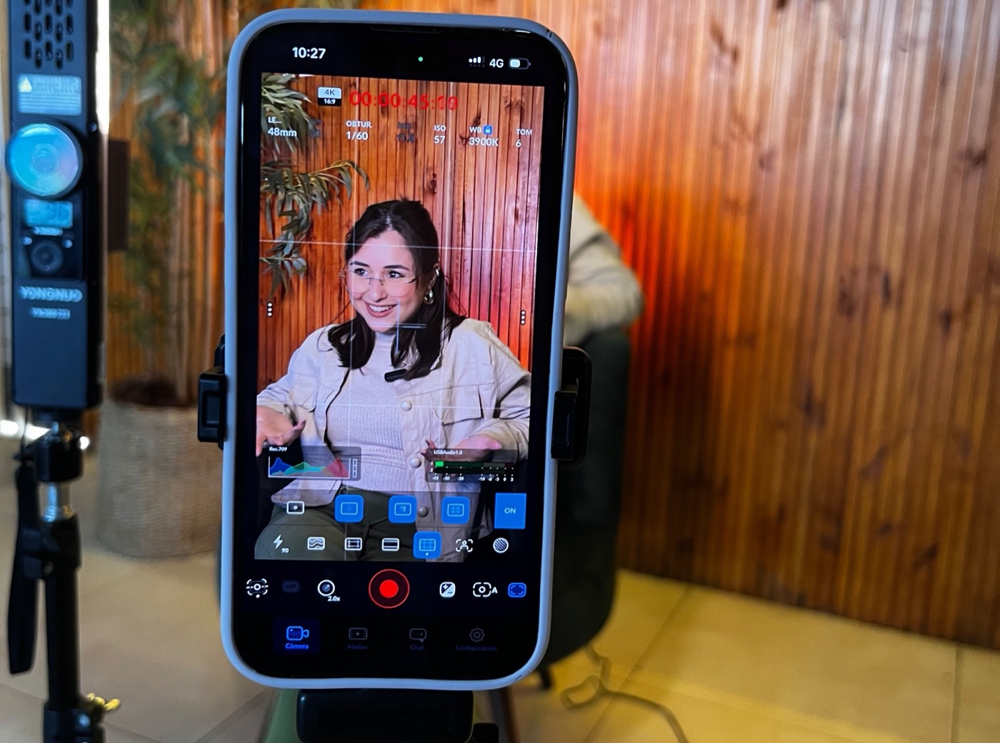
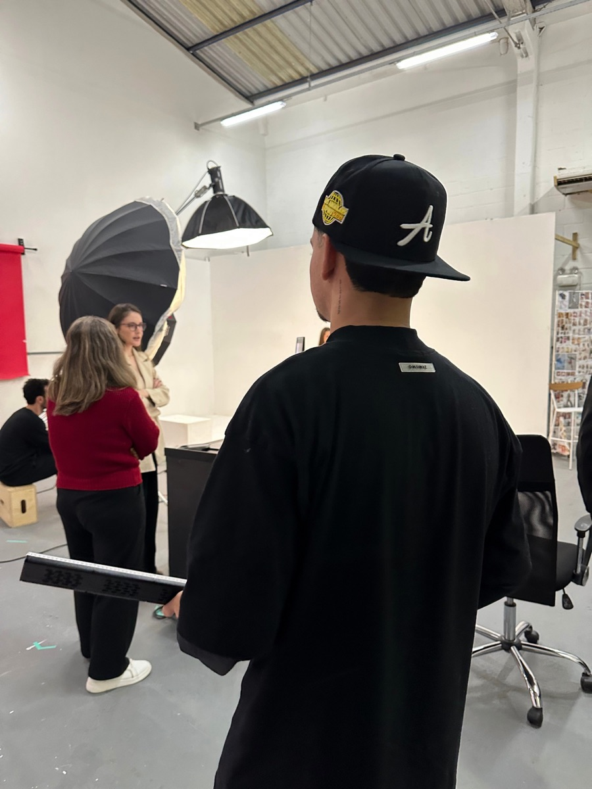

Sobre a Axtra

A Axtra Estratégias Digitais cria conteúdo estratégico para e-commerces, fabricantes e prestadores de serviço, com tom humano e sem roteiros engessados.
Somos a cara da empresa para quem não tem ninguém para isso.
A Axtra Estratégias Digitais cria conteúdo estratégico para e-commerces, fabricantes e prestadores de serviço, com tom humano e sem roteiros engessados.
Somos a cara da empresa para quem não tem ninguém para isso.

A Axtra nasceu da experiência da Camily com o marketing. Ela trabalhava em uma loja de cosméticos, onde sempre cuidava da parte de marketing.
Foi ali que ela descobriu que gostava de criar conteúdo e de trabalhar com marketing digital. A partir disso, começou a produzir vídeos de forma terceirizada para empresas da região.
Santa Rosa do Sul (SC)
Vamos até a empresa, na região ou em outras cidades, para captar o conteúdo.
Feita em Santa Rosa do Sul.
Transformar a imagem digital e o pensamento das pessoas em relação ao marketing, oferecendo estratégias criativas, personalizadas e realmente funcionais para alcançar resultados de verdade.
Comunicação direta, sincera e sem ruídos.
Cumprir o que foi combinado e honrar nossas responsabilidades.
Trabalhar com dedicação, propósito e amor pelo nosso trabalho.
Colocar o bem da empresa em primeiro lugar, valorizando e respeitando cada pessoa da equipe.
Pensar fora da caixa, inovar e manter nossa identidade.
Cuidar da nossa imagem, postura e apresentação, entendendo que cada detalhe comunica.

Muita gente produz conteúdo, mas deixa a gravação na mão do dono. Para quem precisa de vídeos com constância e não tem tempo nem facilidade de aparecer, a Axtra entrega conteúdo estratégico com a apresentação do produto feita por nós na gravação.
+141 mil
visualizações ao mostrar os bastidores reais de uma fábrica de pantufas.
O resultado são clientes que percebem o valor da sua marca e entram em contato.
Vamos conversar.